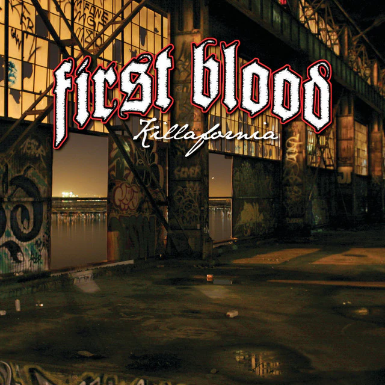
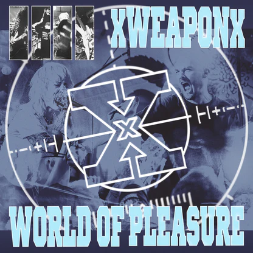
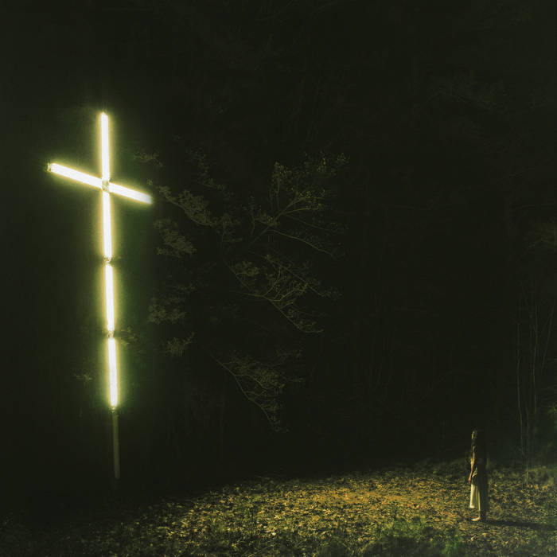

Killafornia- First blood 3.5/5
This album has groovy bass lines and hard-hitting riffs often found in Bay-Area Hardcore. Hard metallic hardcore like no other, though it still leaves a little to desire. Though not perfect, I still would recommend giving the album a listen.

Weapon of Pleasure -xWeaponx and world of pleasure 4/5
An amazing EP combining two killer bands over one common enemy. An album that shows the modern state of straight-edge within hardcore today. xWeaponx is partially made up of Knocked Loose members, this band breathes new life into the genre.

you won’t go before you’re supposed to - Knocked loose 5/5
THE ALBUM OF 2024! This album is critically acclaimed for good reason. Bringing hardcore/metalcore worldwide. This album came out at a perfect time and was met with so much praise. This album was recognized by the Academy with a nomination for a Grammy.